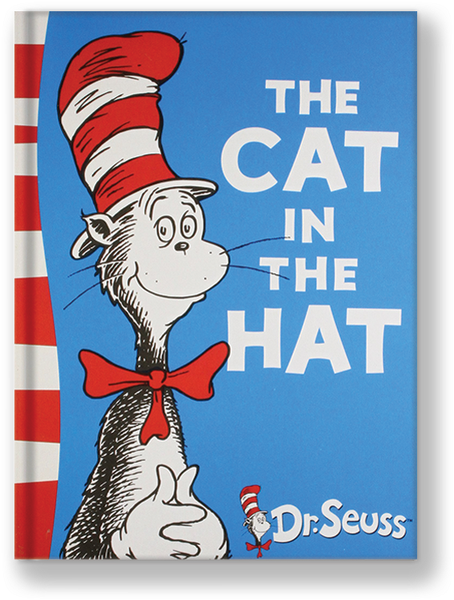
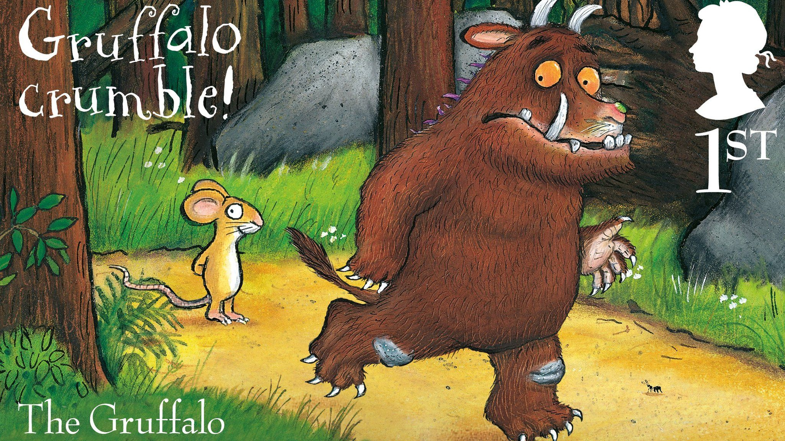
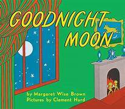
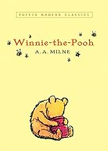

<!Doctype html>
<html></html>
     <nav style="text-align:center;font-size:30px";> <ul>
        <li><a href="threetofive.html">3 to 5 years</a> </li>
     <li  ><a href="sixtoeight.html">6 to 8 years</a> </li> 
      <li ><a href="ninetotwelve.html">9 to 12 year</a> </li>
      <li ><a href="12plus.html">12+ years</a> </li></ul></nav>
<h1 align="center">3 to 5 years</h1>
<table width=100% cellpadding="10" border="1">
     <tr><td align="center"><br><br>
          <b>The Cat In the Hat</b> <br> <br>
           The story revolves around two bored siblings on a rainy day who are visited by a mischievous, talking cat.
     </td>
     <td align="center"><br><br>
          <b>Gruffalo</b> <br> <br>
          "Gruffalo crumble" is an imaginary dish the clever mouse invents to frighten the hungry Gruffalo</td>
           <td align="center"><br><br>
          <b>Goodnight Moon</b> <br> <br>
                Goodnight Moon is a classic children’s bedtime book by Margaret Wise Brown. It features a young bunny bidding a soothing, rhythmic farewell to every familiar object in his bedroom before drifting off to sleep.
         
     
     </td><td align="center"><br><br>
          <b>Winnie The Pooh</b> <br> <br>
           This enchanting collection introduces young readers and their parents to the charming, honey-loving bear, Winnie-the-Pooh, and his dear friends, including the timid Piglet, bouncy Tigger, gloomy Eeyore, and wise Owl. 
     </td></tr>
     
</table>

      
      
      
      
      
    
